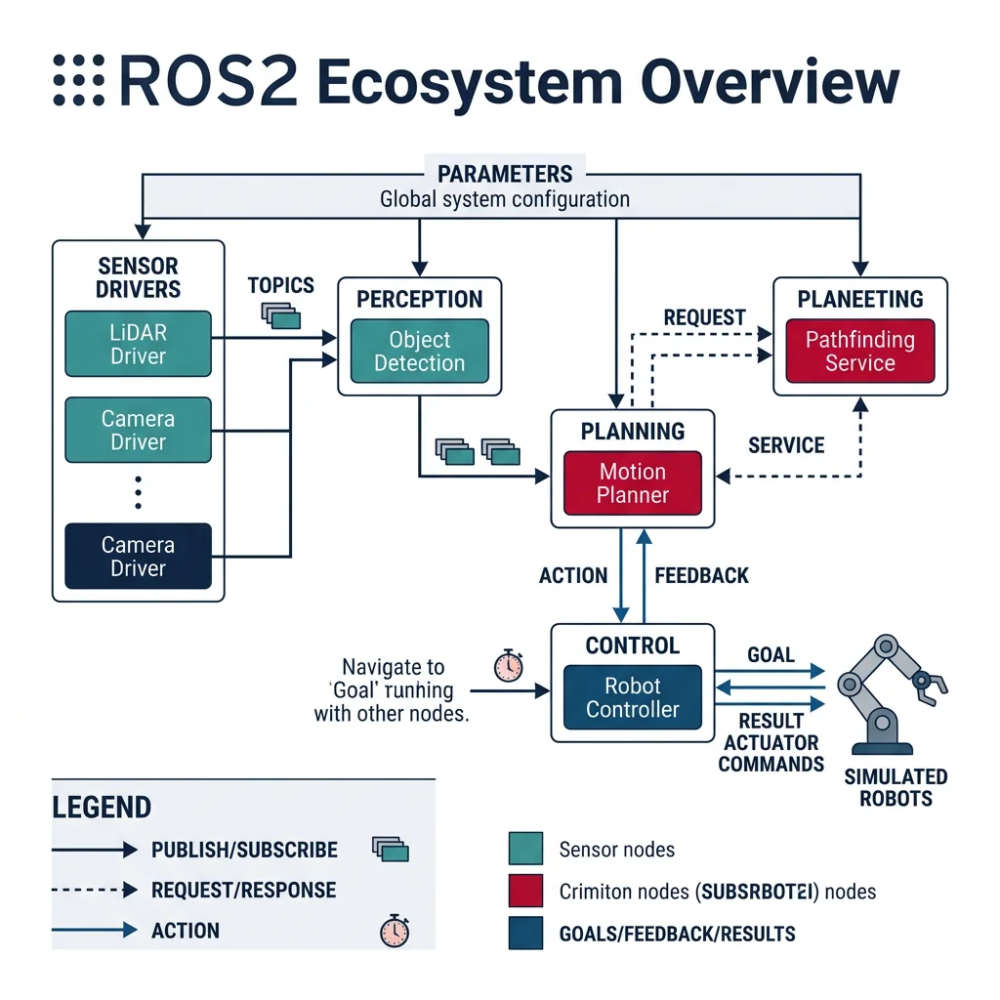
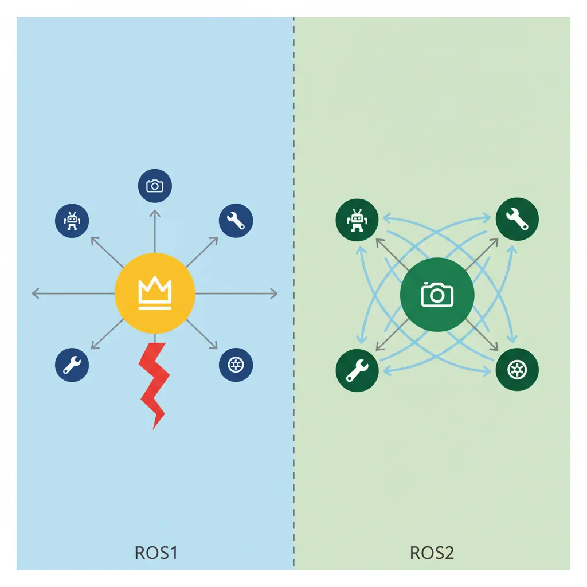
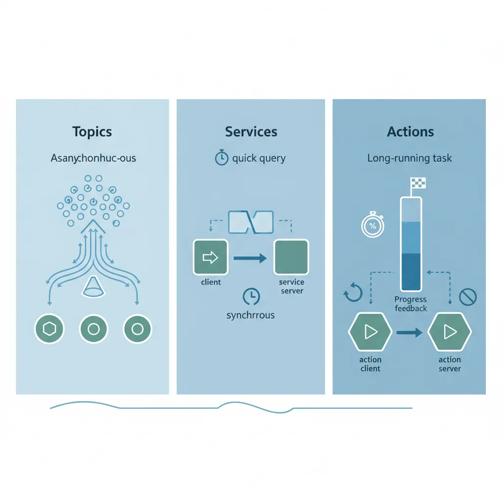
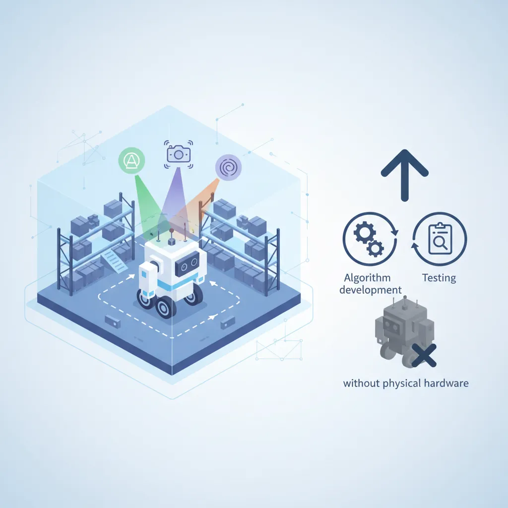
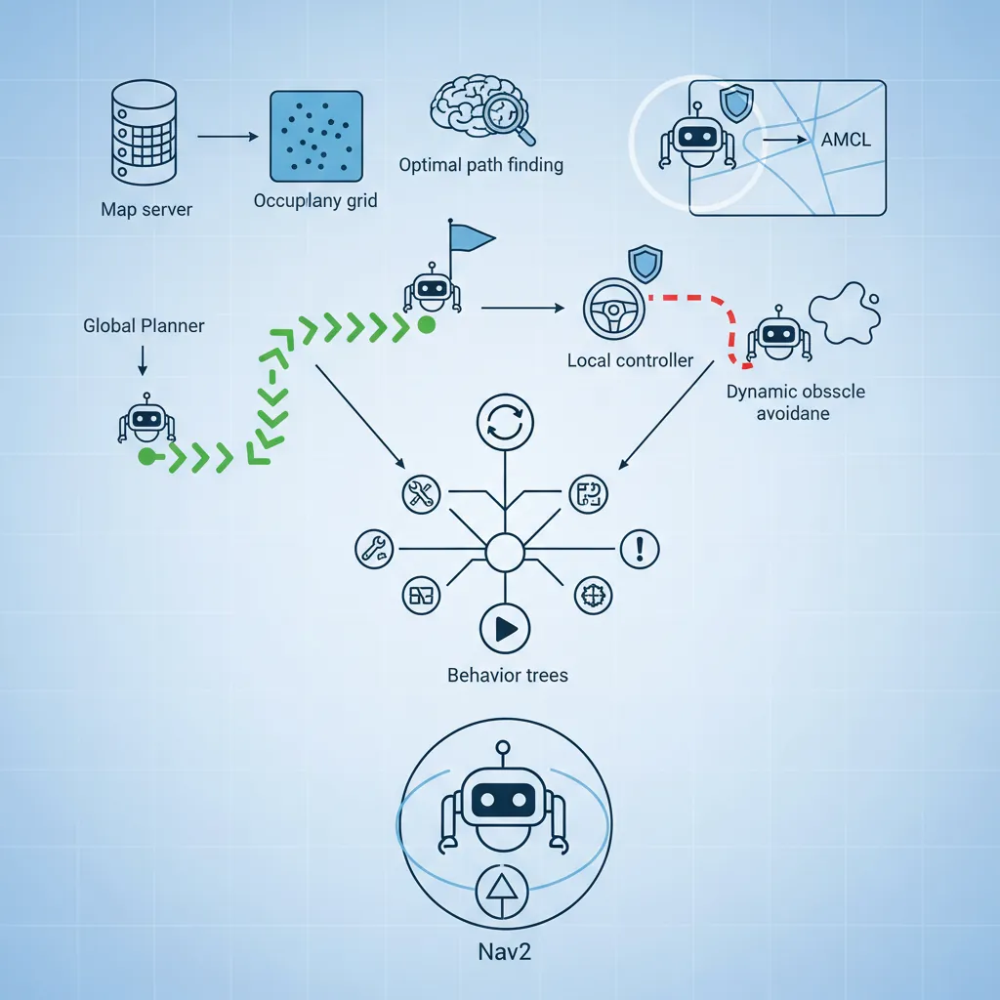

ROS Fundamentals
Robotics & Automation Mastery
Introduction to Robotics
History, types, DOF, architectures, mechatronics, ethicsSensors & Perception Systems
Encoders, IMUs, LiDAR, cameras, sensor fusion, Kalman filters, SLAMActuators & Motion Control
DC/servo/stepper motors, hydraulics, drivers, gear systemsKinematics (Forward & Inverse)
DH parameters, transformations, Jacobians, workspace analysisDynamics & Robot Modeling
Newton-Euler, Lagrangian, inertia, friction, contact modelingControl Systems & PID
PID tuning, state-space, LQR, MPC, adaptive & robust controlEmbedded Systems & Microcontrollers
Arduino, STM32, RTOS, PWM, serial protocols, FPGARobot Operating Systems (ROS)
ROS2, nodes, topics, Gazebo, URDF, navigation stacksComputer Vision for Robotics
Calibration, stereo vision, object recognition, visual SLAMAI Integration & Autonomous Systems
ML, reinforcement learning, path planning, swarm roboticsHuman-Robot Interaction (HRI)
Cobots, gesture/voice control, safety standards, social roboticsIndustrial Robotics & Automation
PLC, SCADA, Industry 4.0, smart factories, digital twinsMobile Robotics
Wheeled/legged robots, autonomous vehicles, drones, marine roboticsSafety, Reliability & Compliance
Functional safety, redundancy, ISO standards, cybersecurityAdvanced & Emerging Robotics
Soft robotics, bio-inspired, surgical, space, nano-roboticsSystems Integration & Deployment
HW/SW co-design, testing, field deployment, lifecycleRobotics Business & Strategy
Startups, product-market fit, manufacturing, go-to-marketComplete Robotics System Project
Autonomous rover, pick-and-place arm, delivery robot, swarm simThink of ROS as the "operating system for your robot's brain." Just as Windows or Linux manages files, processes, and hardware for personal computers, ROS manages nodes, messages, and hardware drivers for robots. Without ROS, every robotics team would reinvent the wheel — writing their own sensor drivers, communication protocols, and planning algorithms from scratch.

ROS vs ROS2 — Why the Shift?
ROS1 (2007–2025) revolutionized robotics but was designed for academic labs — single robot, one network, Linux only. As robots moved into factories, hospitals, and roads, serious limitations emerged. ROS2 (first stable release: Foxy Fitzroy, 2020) was a ground-up redesign addressing every one of these shortcomings.

| Feature | ROS1 (Noetic) | ROS2 (Humble / Iron / Jazzy) |
|---|---|---|
| Middleware | Custom TCPROS / UDPROS | DDS (Data Distribution Service) — industrial-grade |
| Master Node | Required (roscore) — single point of failure | No master needed — decentralized discovery |
| Real-Time | Not supported | Supported (with proper RTOS & DDS QoS) |
| Multi-Robot | Hacky workarounds (namespaces) | Native domain IDs & namespaces |
| Security | None (open network) | SROS2 — authentication, encryption, access control |
| OS Support | Linux only (Ubuntu) | Linux, macOS, Windows, RTOS |
| Lifecycle | Nodes either running or not | Managed node lifecycle (Unconfigured → Active → Shutdown) |
| Build System | catkin | colcon + ament (CMake or Python) |
| QoS | TCP or UDP (pick one) | Fine-grained QoS profiles (reliability, durability, deadline) |
| Language API | rospy / roscpp | rclpy / rclcpp (unified client library) |
Installation & Setup
ROS2 uses colcon as its build tool and ament as its build system generator. Here's the quickest path to a working ROS2 environment:
# === ROS2 Humble Installation on Ubuntu 22.04 ===
# 1. Set locale
sudo apt update && sudo apt install locales
sudo locale-gen en_US en_US.UTF-8
sudo update-locale LC_ALL=en_US.UTF-8 LANG=en_US.UTF-8
# 2. Add ROS2 apt repository
sudo apt install software-properties-common
sudo add-apt-repository universe
sudo apt update && sudo apt install curl -y
sudo curl -sSL https://raw.githubusercontent.com/ros/rosdistro/master/ros.key -o /usr/share/keyrings/ros-archive-keyring.gpg
echo "deb [arch=$(dpkg --print-architecture) signed-by=/usr/share/keyrings/ros-archive-keyring.gpg] http://packages.ros.org/ros2/ubuntu $(. /etc/os-release && echo $UBUNTU_CODENAME) main" | sudo tee /etc/apt/sources.list.d/ros2.list
# 3. Install ROS2 Desktop (includes RViz, demos, tutorials)
sudo apt update
sudo apt install ros-humble-desktop
# 4. Source the environment
echo "source /opt/ros/humble/setup.bash" >> ~/.bashrc
source ~/.bashrc
# 5. Install colcon build tool
sudo apt install python3-colcon-common-extensions
# 6. Create a workspace
mkdir -p ~/ros2_ws/src
cd ~/ros2_ws
colcon build
source install/setup.bash
# 7. Verify installation
ros2 run demo_nodes_cpp talker
# In another terminal:
ros2 run demo_nodes_cpp listenerros2_ws/ → src/ (your packages) → build/ (build artifacts) → install/ (installed packages) → log/ (build logs). Always source install/setup.bash after building.
Creating a ROS2 Package
# Create a Python package
cd ~/ros2_ws/src
ros2 pkg create --build-type ament_python my_robot_pkg \
--dependencies rclpy std_msgs sensor_msgs geometry_msgs
# Create a C++ package
ros2 pkg create --build-type ament_cmake my_robot_cpp \
--dependencies rclcpp std_msgs
# Build specific package
cd ~/ros2_ws
colcon build --packages-select my_robot_pkg
source install/setup.bashROS2 Architecture
ROS2's architecture is built on the publish-subscribe pattern with three communication paradigms: Topics (asynchronous streaming), Services (synchronous request-response), and Actions (long-running tasks with feedback). Everything runs inside Nodes — self-contained processes that communicate via a DDS middleware.

graph TD
APP["Application Nodes
Navigation, Perception, Planning"]
RCL["Client Libraries
rclcpp (C++) / rclpy (Python)"]
RMW["RMW Abstraction Layer
(ROS Middleware Interface)"]
DDS["DDS Middleware
FastDDS / CycloneDDS / Connext"]
TRANS["Transport Layer
UDP Multicast / Shared Memory"]
APP --> RCL
RCL --> RMW
RMW --> DDS
DDS --> TRANS
DISC["Discovery
(DDS SPDP/SEDP)"] -.-> DDS
QOS["QoS Policies
Reliability, Durability,
History, Deadline"] -.-> RMW
style APP fill:#e8f4f4,stroke:#3B9797
style RCL fill:#f0f4f8,stroke:#16476A
style DDS fill:#132440,stroke:#132440,color:#fff
Nodes & Executors
A node is a single-purpose process — one node for the camera, one for LiDAR, one for path planning, one for motor control. This modular design means you can develop, test, and replace each component independently.
#!/usr/bin/env python3
"""
ROS2 Node Example: A simple publisher-subscriber pair
demonstrating the fundamental ROS2 node pattern.
"""
import rclpy
from rclpy.node import Node
from std_msgs.msg import String
from sensor_msgs.msg import LaserScan
import math
class RobotStatusPublisher(Node):
"""Publishes robot status messages at 10 Hz."""
def __init__(self):
super().__init__('robot_status_publisher')
# Create publisher: topic name, message type, queue size
self.status_pub = self.create_publisher(String, '/robot/status', 10)
# Create timer callback at 10 Hz
self.timer = self.create_timer(0.1, self.publish_status)
self.count = 0
self.get_logger().info('Robot Status Publisher started')
def publish_status(self):
msg = String()
msg.data = f'Robot operational | Heartbeat #{self.count}'
self.status_pub.publish(msg)
self.count += 1
class ObstacleDetector(Node):
"""Subscribes to LiDAR and detects nearby obstacles."""
def __init__(self):
super().__init__('obstacle_detector')
# Subscribe to laser scan data
self.scan_sub = self.create_subscription(
LaserScan,
'/scan',
self.scan_callback,
10 # QoS depth
)
# Publish obstacle warnings
self.warning_pub = self.create_publisher(String, '/obstacle_warning', 10)
self.min_safe_distance = 0.5 # meters
self.get_logger().info('Obstacle Detector started')
def scan_callback(self, msg: LaserScan):
# Find minimum distance in scan
valid_ranges = [r for r in msg.ranges
if msg.range_min < r < msg.range_max]
if valid_ranges:
min_dist = min(valid_ranges)
min_idx = msg.ranges.index(min_dist)
angle = msg.angle_min + min_idx * msg.angle_increment
if min_dist < self.min_safe_distance:
warning = String()
warning.data = (f'OBSTACLE at {min_dist:.2f}m, '
f'angle {math.degrees(angle):.1f}°')
self.warning_pub.publish(warning)
self.get_logger().warn(warning.data)
def main(args=None):
rclpy.init(args=args)
# Single-threaded executor (default)
publisher = RobotStatusPublisher()
rclpy.spin(publisher)
publisher.destroy_node()
rclpy.shutdown()
if __name__ == '__main__':
main()• SingleThreadedExecutor — processes callbacks one at a time (default, simplest)
• MultiThreadedExecutor — parallel callbacks on multiple threads (for CPU-heavy work)
• StaticSingleThreadedExecutor — optimized for static node configurations (lowest overhead)
#!/usr/bin/env python3
"""
Multi-node executor: Run multiple nodes in one process
using MultiThreadedExecutor for parallel callback processing.
"""
import rclpy
from rclpy.executors import MultiThreadedExecutor
from rclpy.node import Node
from std_msgs.msg import Float64
from geometry_msgs.msg import Twist
class MotorController(Node):
def __init__(self):
super().__init__('motor_controller')
self.cmd_sub = self.create_subscription(
Twist, '/cmd_vel', self.cmd_callback, 10)
self.left_pub = self.create_publisher(Float64, '/left_wheel/cmd', 10)
self.right_pub = self.create_publisher(Float64, '/right_wheel/cmd', 10)
self.wheel_base = 0.3 # meters
def cmd_callback(self, msg: Twist):
# Differential drive kinematics
v = msg.linear.x
w = msg.angular.z
left_vel = Float64(data=v - (w * self.wheel_base / 2))
right_vel = Float64(data=v + (w * self.wheel_base / 2))
self.left_pub.publish(left_vel)
self.right_pub.publish(right_vel)
class BatteryMonitor(Node):
def __init__(self):
super().__init__('battery_monitor')
self.timer = self.create_timer(1.0, self.check_battery)
self.voltage = 12.6 # simulated
def check_battery(self):
self.voltage -= 0.001 # simulated drain
if self.voltage < 11.0:
self.get_logger().error(f'LOW BATTERY: {self.voltage:.2f}V')
def main(args=None):
rclpy.init(args=args)
motor = MotorController()
battery = BatteryMonitor()
# Run both nodes with parallel callbacks
executor = MultiThreadedExecutor(num_threads=4)
executor.add_node(motor)
executor.add_node(battery)
try:
executor.spin()
finally:
motor.destroy_node()
battery.destroy_node()
rclpy.shutdown()
if __name__ == '__main__':
main()Topics & Messages
Topics are named buses for asynchronous, many-to-many communication. Publishers send messages without knowing who's listening, and subscribers receive without knowing who's sending. This decoupling is critical for modular robotics.
Custom Messages
While ROS2 ships with standard messages (std_msgs, sensor_msgs, geometry_msgs), robotics projects often need custom message types:
# File: my_robot_interfaces/msg/RobotState.msg
# Custom message definition
# Header with timestamp and frame
std_msgs/Header header
# Joint states
float64[] joint_positions
float64[] joint_velocities
float64[] joint_efforts
# Robot status
string mode # "idle", "moving", "error"
bool emergency_stop
float64 battery_voltage
float64 cpu_temperature
# Navigation state
geometry_msgs/Pose2D current_pose
geometry_msgs/Twist current_velocityQuality of Service (QoS) Profiles
QoS is one of ROS2's most powerful features — fine-grained control over message delivery guarantees. This is essential when mixing safety-critical and best-effort data streams:
#!/usr/bin/env python3
"""
QoS Profiles: Configuring reliability, durability, and history
for different sensor data streams.
"""
import rclpy
from rclpy.node import Node
from rclpy.qos import QoSProfile, ReliabilityPolicy, DurabilityPolicy, HistoryPolicy
from sensor_msgs.msg import Image, LaserScan
from std_msgs.msg import String
class SensorFusionNode(Node):
def __init__(self):
super().__init__('sensor_fusion')
# Best-effort QoS for camera (high bandwidth, some loss OK)
camera_qos = QoSProfile(
reliability=ReliabilityPolicy.BEST_EFFORT,
durability=DurabilityPolicy.VOLATILE,
history=HistoryPolicy.KEEP_LAST,
depth=1 # Only keep latest frame
)
# Reliable QoS for safety-critical data (must not lose)
safety_qos = QoSProfile(
reliability=ReliabilityPolicy.RELIABLE,
durability=DurabilityPolicy.TRANSIENT_LOCAL,
history=HistoryPolicy.KEEP_LAST,
depth=10
)
# Sensor-data QoS (built-in preset for sensors)
from rclpy.qos import qos_profile_sensor_data
self.cam_sub = self.create_subscription(
Image, '/camera/image', self.camera_cb, camera_qos)
self.scan_sub = self.create_subscription(
LaserScan, '/scan', self.lidar_cb, qos_profile_sensor_data)
self.estop_sub = self.create_subscription(
String, '/emergency_stop', self.estop_cb, safety_qos)
self.get_logger().info('Sensor Fusion with QoS started')
def camera_cb(self, msg): pass # Process camera
def lidar_cb(self, msg): pass # Process LiDAR
def estop_cb(self, msg):
self.get_logger().fatal('EMERGENCY STOP RECEIVED')
def main(args=None):
rclpy.init(args=args)
node = SensorFusionNode()
rclpy.spin(node)
node.destroy_node()
rclpy.shutdown()
if __name__ == '__main__':
main()| QoS Policy | Options | When to Use |
|---|---|---|
| Reliability | RELIABLE / BEST_EFFORT | RELIABLE for commands; BEST_EFFORT for sensor streams |
| Durability | TRANSIENT_LOCAL / VOLATILE | TRANSIENT_LOCAL for "late joiners" (e.g., map server) |
| History | KEEP_LAST(N) / KEEP_ALL | KEEP_LAST(1) for real-time; KEEP_ALL for logging |
| Deadline | Duration | Alert if publisher misses expected rate |
| Liveliness | AUTOMATIC / MANUAL | Detect crashed nodes |
Services & Actions
Services are synchronous request-response calls — like calling a function on another node. Actions are long-running tasks with progress feedback and cancellation — think "navigate to waypoint."
#!/usr/bin/env python3
"""
ROS2 Service Example: A calibration service that performs
sensor calibration when requested.
"""
import rclpy
from rclpy.node import Node
from std_srvs.srv import Trigger
from example_interfaces.srv import SetBool
import time
class CalibrationServer(Node):
def __init__(self):
super().__init__('calibration_server')
# Create service: service type, name, callback
self.calibrate_srv = self.create_service(
Trigger,
'/calibrate_sensors',
self.calibrate_callback
)
self.enable_srv = self.create_service(
SetBool,
'/enable_motors',
self.enable_callback
)
self.motors_enabled = False
self.get_logger().info('Calibration Server ready')
def calibrate_callback(self, request, response):
self.get_logger().info('Starting sensor calibration...')
# Simulate calibration process
time.sleep(2.0)
response.success = True
response.message = 'All sensors calibrated successfully'
self.get_logger().info('Calibration complete')
return response
def enable_callback(self, request, response):
self.motors_enabled = request.data
state = 'ENABLED' if self.motors_enabled else 'DISABLED'
response.success = True
response.message = f'Motors {state}'
self.get_logger().info(f'Motors {state}')
return response
def main(args=None):
rclpy.init(args=args)
server = CalibrationServer()
rclpy.spin(server)
server.destroy_node()
rclpy.shutdown()
if __name__ == '__main__':
main()Actions — Long-Running Tasks with Feedback
#!/usr/bin/env python3
"""
ROS2 Action Server: Navigate-to-pose action with
continuous feedback on distance remaining.
"""
import rclpy
from rclpy.node import Node
from rclpy.action import ActionServer
from nav2_msgs.action import NavigateToPose
from geometry_msgs.msg import PoseStamped
import math
import time
class NavigationActionServer(Node):
def __init__(self):
super().__init__('navigation_action_server')
self._action_server = ActionServer(
self,
NavigateToPose,
'navigate_to_pose',
self.execute_callback
)
# Simulated robot position
self.current_x = 0.0
self.current_y = 0.0
self.get_logger().info('Navigation Action Server ready')
def execute_callback(self, goal_handle):
self.get_logger().info('Executing navigation goal...')
target_x = goal_handle.request.pose.pose.position.x
target_y = goal_handle.request.pose.pose.position.y
feedback_msg = NavigateToPose.Feedback()
speed = 0.5 # m/s simulated
while True:
# Calculate distance remaining
dx = target_x - self.current_x
dy = target_y - self.current_y
distance = math.sqrt(dx**2 + dy**2)
if distance < 0.1:
break
# Check if canceled
if goal_handle.is_cancel_requested:
goal_handle.canceled()
self.get_logger().info('Navigation canceled')
return NavigateToPose.Result()
# Move toward target
step = min(speed * 0.1, distance)
self.current_x += step * dx / distance
self.current_y += step * dy / distance
# Publish feedback
feedback_msg.distance_remaining = distance
goal_handle.publish_feedback(feedback_msg)
time.sleep(0.1)
goal_handle.succeed()
result = NavigateToPose.Result()
self.get_logger().info('Navigation succeeded!')
return result
def main(args=None):
rclpy.init(args=args)
server = NavigationActionServer()
rclpy.spin(server)
server.destroy_node()
rclpy.shutdown()
if __name__ == '__main__':
main()• Topics — continuous data streams (sensor data, odometry, /cmd_vel)
• Services — quick request-response (calibrate, get map, toggle mode)
• Actions — long-running tasks that need feedback or cancellation (navigate, pick-and-place, scan area)
Launch Files & Parameters
In ROS2, launch files are written in Python (not XML like ROS1), giving you full programming power — conditionals, loops, environment variables:
#!/usr/bin/env python3
"""
ROS2 Launch File: Start an entire robot system
with configurable parameters.
"""
from launch import LaunchDescription
from launch.actions import DeclareLaunchArgument, GroupAction
from launch.conditions import IfCondition
from launch.substitutions import LaunchConfiguration
from launch_ros.actions import Node
def generate_launch_description():
# Declare arguments (configurable at launch time)
use_sim = DeclareLaunchArgument(
'use_sim', default_value='true',
description='Use Gazebo simulation'
)
robot_name = DeclareLaunchArgument(
'robot_name', default_value='my_robot',
description='Robot namespace'
)
# Motor controller node
motor_node = Node(
package='my_robot_pkg',
executable='motor_controller',
name='motor_controller',
namespace=LaunchConfiguration('robot_name'),
parameters=[{
'wheel_base': 0.3,
'max_speed': 1.0,
'use_pid': True,
'pid_gains': [2.0, 0.5, 0.1]
}],
remappings=[
('/cmd_vel', '/robot/cmd_vel'),
('/odom', '/robot/odom')
]
)
# Sensor processing node
sensor_node = Node(
package='my_robot_pkg',
executable='sensor_fusion',
name='sensor_fusion',
namespace=LaunchConfiguration('robot_name'),
parameters=['config/sensor_params.yaml']
)
# Conditional simulation nodes
sim_group = GroupAction(
condition=IfCondition(LaunchConfiguration('use_sim')),
actions=[
Node(
package='gazebo_ros',
executable='spawn_entity.py',
arguments=['-entity', 'robot', '-topic', 'robot_description']
)
]
)
return LaunchDescription([
use_sim,
robot_name,
motor_node,
sensor_node,
sim_group
])Parameter YAML File
# File: config/sensor_params.yaml
# ROS2 parameter configuration for sensor fusion
sensor_fusion:
ros__parameters:
camera:
topic: /camera/image_raw
frame_rate: 30.0
resolution: [640, 480]
lidar:
topic: /scan
range_min: 0.12
range_max: 10.0
num_beams: 360
imu:
topic: /imu/data
gyro_noise: 0.001
accel_noise: 0.01
fusion:
method: "extended_kalman"
publish_rate: 50.0
use_camera: true
use_lidar: true
use_imu: trueSimulation & Modeling
Simulation is the single most important development tool in modern robotics. It lets you test algorithms, train AI, and validate designs without risking expensive hardware. A typical robotics team spends 80%+ of development time in simulation before touching the physical robot.

URDF & Xacro — Describing Your Robot
URDF (Unified Robot Description Format) is an XML format that describes a robot's physical structure — links (rigid bodies), joints (connections), visual meshes, collision shapes, and inertial properties.
<!-- File: urdf/differential_drive_robot.xacro -->
<?xml version="1.0"?>
<robot xmlns:xacro="http://www.ros.org/wiki/xacro" name="my_robot">
<!-- Properties (Xacro variables) -->
<xacro:property name="chassis_length" value="0.4" />
<xacro:property name="chassis_width" value="0.3" />
<xacro:property name="chassis_height" value="0.15" />
<xacro:property name="wheel_radius" value="0.05" />
<xacro:property name="wheel_width" value="0.03" />
<xacro:property name="chassis_mass" value="5.0" />
<xacro:property name="wheel_mass" value="0.5" />
<!-- Xacro macro for inertia calculation -->
<xacro:macro name="cylinder_inertia" params="m r l">
<inertial>
<mass value="${m}" />
<inertia ixx="${m*(3*r*r+l*l)/12}" ixy="0" ixz="0"
iyy="${m*(3*r*r+l*l)/12}" iyz="0"
izz="${m*r*r/2}" />
</inertial>
</xacro:macro>
<!-- Base Link (chassis) -->
<link name="base_link">
<visual>
<geometry>
<box size="${chassis_length} ${chassis_width} ${chassis_height}" />
</geometry>
<material name="blue">
<color rgba="0.1 0.3 0.6 1.0" />
</material>
</visual>
<collision>
<geometry>
<box size="${chassis_length} ${chassis_width} ${chassis_height}" />
</geometry>
</collision>
<inertial>
<mass value="${chassis_mass}" />
<inertia ixx="${chassis_mass/12*(chassis_width*chassis_width+chassis_height*chassis_height)}"
ixy="0" ixz="0"
iyy="${chassis_mass/12*(chassis_length*chassis_length+chassis_height*chassis_height)}"
iyz="0"
izz="${chassis_mass/12*(chassis_length*chassis_length+chassis_width*chassis_width)}" />
</inertial>
</link>
<!-- Xacro macro for wheel -->
<xacro:macro name="wheel" params="prefix y_reflect">
<link name="${prefix}_wheel">
<visual>
<geometry><cylinder radius="${wheel_radius}" length="${wheel_width}" /></geometry>
<material name="black"><color rgba="0.1 0.1 0.1 1.0" /></material>
</visual>
<collision>
<geometry><cylinder radius="${wheel_radius}" length="${wheel_width}" /></geometry>
</collision>
<xacro:cylinder_inertia m="${wheel_mass}" r="${wheel_radius}" l="${wheel_width}" />
</link>
<joint name="${prefix}_wheel_joint" type="continuous">
<parent link="base_link" />
<child link="${prefix}_wheel" />
<origin xyz="0 ${y_reflect*(chassis_width/2+wheel_width/2)} 0" rpy="${-pi/2} 0 0" />
<axis xyz="0 0 1" />
</joint>
</xacro:macro>
<!-- Instantiate wheels -->
<xacro:wheel prefix="left" y_reflect="1" />
<xacro:wheel prefix="right" y_reflect="-1" />
<!-- LiDAR sensor -->
<link name="lidar_link">
<visual>
<geometry><cylinder radius="0.04" length="0.05" /></geometry>
<material name="red"><color rgba="0.8 0.1 0.1 1.0" /></material>
</visual>
</link>
<joint name="lidar_joint" type="fixed">
<parent link="base_link" />
<child link="lidar_link" />
<origin xyz="0.15 0 ${chassis_height/2 + 0.025}" rpy="0 0 0" />
</joint>
</robot>Gazebo Simulation
Gazebo is a high-fidelity 3D physics simulator used by most ROS developers. It simulates gravity, friction, contact forces, sensor noise, and actuator dynamics. Gazebo Ignition (now "Gz") is the newer generation with improved rendering and plugin architecture.
Case Study: Amazon Robotics — SimReal Transfer
Amazon's warehouse robots are developed primarily in simulation. The team uses custom Gazebo worlds replicating entire warehouses — shelves, conveyor belts, human workers, and hundreds of mobile robots. Key findings:
- 95% of navigation bugs are caught in simulation before deployment
- Multi-robot coordination tested with 800+ virtual robots simultaneously
- Domain randomization (varying lighting, shelf positions, floor friction) ensures sim-trained models work in real warehouses
- Sim-to-real gap addressed by calibrating physics (wheel slip, motor latency) against real robot telemetry
#!/usr/bin/env python3
"""
Launch file for spawning robot in Gazebo with
sensor plugins and world configuration.
"""
import os
from ament_index_python.packages import get_package_share_directory
from launch import LaunchDescription
from launch.actions import IncludeLaunchDescription, ExecuteProcess
from launch.launch_description_sources import PythonLaunchDescriptionSource
from launch_ros.actions import Node
def generate_launch_description():
pkg_dir = get_package_share_directory('my_robot_pkg')
# Start Gazebo with custom world
gazebo = IncludeLaunchDescription(
PythonLaunchDescriptionSource(
os.path.join(
get_package_share_directory('gazebo_ros'),
'launch', 'gazebo.launch.py'
)
),
launch_arguments={
'world': os.path.join(pkg_dir, 'worlds', 'warehouse.sdf'),
'verbose': 'true'
}.items()
)
# Publish robot description from URDF/Xacro
robot_state_publisher = Node(
package='robot_state_publisher',
executable='robot_state_publisher',
parameters=[{
'robot_description': open(
os.path.join(pkg_dir, 'urdf', 'robot.urdf')
).read()
}]
)
# Spawn robot in Gazebo
spawn_robot = Node(
package='gazebo_ros',
executable='spawn_entity.py',
arguments=[
'-topic', 'robot_description',
'-entity', 'my_robot',
'-x', '0.0', '-y', '0.0', '-z', '0.1'
]
)
return LaunchDescription([
gazebo,
robot_state_publisher,
spawn_robot
])RViz Visualization
RViz (ROS Visualization) is the primary debugging tool in ROS — it renders your robot model, sensor data, TF frames, paths, and costmaps in 3D. Unlike Gazebo (physics simulator), RViz is purely a visualization tool that subscribes to ROS topics.
• Gazebo = the world (physics, objects, gravity) — "where the robot lives"
• RViz = the dashboard (sensor data, robot model, debug info) — "what the robot sees"
You typically run both simultaneously: Gazebo simulates the physics, RViz shows what ROS nodes perceive.
# Launch RViz with saved configuration
ros2 run rviz2 rviz2 -d config/robot_view.rviz
# Common RViz display types to add:
# RobotModel — shows URDF
# TF — coordinate frames
# LaserScan — LiDAR points
# Image — camera feed
# PointCloud2 — depth camera / LiDAR 3D
# Map — occupancy grid
# Path — planned trajectory
# MarkerArray — custom 3D markersNavigation & Motion Planning
Navigation is the crown jewel of ROS — getting a mobile robot from point A to point B while avoiding obstacles. ROS2's Nav2 stack and MoveIt for arm planning are the two most widely used packages in the entire ROS ecosystem.

Nav2 Stack — Mobile Robot Navigation
Nav2 replaces ROS1's move_base with a modular, configurable behavior-tree-based navigation system. It handles localization, costmap generation, global planning, local planning, and recovery behaviors.
1. Map Server — loads the pre-built occupancy grid map
2. AMCL — Adaptive Monte Carlo Localization (particle filter)
3. Global Planner — finds optimal path (NavFn / Theta* / Smac)
4. Local Planner (Controller) — follows path while dodging dynamic obstacles (DWB / MPPI / RPP)
5. Behavior Trees — orchestrate the full navigation pipeline with recovery behaviors
# Nav2 parameter configuration (nav2_params.yaml)
# Minimal configuration for differential drive robot
amcl:
ros__parameters:
alpha1: 0.2 # Rotation noise from rotation
alpha2: 0.2 # Rotation noise from translation
alpha3: 0.2 # Translation noise from translation
alpha4: 0.2 # Translation noise from rotation
base_frame_id: "base_link"
global_frame_id: "map"
max_particles: 2000
min_particles: 500
update_min_d: 0.25 # meters
update_min_a: 0.2 # radians
controller_server:
ros__parameters:
controller_frequency: 20.0
FollowPath:
plugin: "dwb_core::DWBLocalPlanner"
min_vel_x: 0.0
max_vel_x: 0.5
max_vel_theta: 1.0
min_speed_xy: 0.0
max_speed_xy: 0.5
acc_lim_x: 2.5
acc_lim_theta: 3.2
decel_lim_x: -2.5
xy_goal_tolerance: 0.15
yaw_goal_tolerance: 0.15
critics:
- "RotateToGoal"
- "Oscillation"
- "ObstacleFootprint"
- "GoalAlign"
- "PathAlign"
- "PathDist"
- "GoalDist"
planner_server:
ros__parameters:
GridBased:
plugin: "nav2_navfn_planner/NavfnPlanner"
tolerance: 0.5
use_astar: true
allow_unknown: true
global_costmap:
global_costmap:
ros__parameters:
update_frequency: 1.0
publish_frequency: 1.0
robot_radius: 0.22
resolution: 0.05
plugins: ["static_layer", "obstacle_layer", "inflation_layer"]
static_layer:
plugin: "nav2_costmap_2d::StaticLayer"
map_subscribe_transient_local: true
obstacle_layer:
plugin: "nav2_costmap_2d::ObstacleLayer"
observation_sources: scan
scan:
topic: /scan
max_obstacle_height: 2.0
clearing: true
marking: true
inflation_layer:
plugin: "nav2_costmap_2d::InflationLayer"
cost_scaling_factor: 3.0
inflation_radius: 0.55Sending Navigation Goals Programmatically
#!/usr/bin/env python3
"""
Nav2 Goal Client: Send waypoints to the navigation stack
and monitor progress with feedback.
"""
import rclpy
from rclpy.node import Node
from rclpy.action import ActionClient
from nav2_msgs.action import NavigateToPose
from geometry_msgs.msg import PoseStamped
import math
class WaypointNavigator(Node):
def __init__(self):
super().__init__('waypoint_navigator')
self.nav_client = ActionClient(self, NavigateToPose, 'navigate_to_pose')
# Define patrol waypoints (x, y, yaw)
self.waypoints = [
(2.0, 0.0, 0.0),
(2.0, 3.0, 1.57),
(0.0, 3.0, 3.14),
(0.0, 0.0, -1.57)
]
self.current_wp = 0
def send_goal(self, x, y, yaw):
goal_msg = NavigateToPose.Goal()
goal_msg.pose = PoseStamped()
goal_msg.pose.header.frame_id = 'map'
goal_msg.pose.header.stamp = self.get_clock().now().to_msg()
goal_msg.pose.pose.position.x = x
goal_msg.pose.pose.position.y = y
goal_msg.pose.pose.orientation.z = math.sin(yaw / 2.0)
goal_msg.pose.pose.orientation.w = math.cos(yaw / 2.0)
self.nav_client.wait_for_server()
self.get_logger().info(f'Navigating to ({x:.1f}, {y:.1f})')
future = self.nav_client.send_goal_async(
goal_msg,
feedback_callback=self.feedback_callback
)
future.add_done_callback(self.goal_response_callback)
def feedback_callback(self, feedback_msg):
dist = feedback_msg.feedback.distance_remaining
self.get_logger().info(f'Distance remaining: {dist:.2f}m')
def goal_response_callback(self, future):
goal_handle = future.result()
if not goal_handle.accepted:
self.get_logger().error('Goal rejected')
return
result_future = goal_handle.get_result_async()
result_future.add_done_callback(self.result_callback)
def result_callback(self, future):
self.get_logger().info('Waypoint reached!')
self.current_wp = (self.current_wp + 1) % len(self.waypoints)
wp = self.waypoints[self.current_wp]
self.send_goal(*wp) # Go to next waypoint
def start_patrol(self):
wp = self.waypoints[0]
self.send_goal(*wp)
def main(args=None):
rclpy.init(args=args)
navigator = WaypointNavigator()
navigator.start_patrol()
rclpy.spin(navigator)
navigator.destroy_node()
rclpy.shutdown()
if __name__ == '__main__':
main()MoveIt Motion Planning
MoveIt is the standard framework for robotic arm manipulation in ROS. It handles inverse kinematics, motion planning (collision-free trajectories), grasp planning, and perception integration. MoveIt 2 is the ROS2 version.
Case Study: Universal Robots + MoveIt in Manufacturing
Universal Robots (UR) provides official ROS2 drivers for their cobots (UR3e, UR5e, UR10e, UR16e, UR20, UR30). MoveIt integration enables:
- Collision-aware planning — OMPL planners find joint-space trajectories that avoid obstacles
- Cartesian path planning — straight-line end-effector motion for welding/painting tasks
- Pick-and-place pipelines — perception (object detection) → grasp planning → motion execution → place verification
- Force/torque control — compliant contact tasks (polishing, assembly) using UR's built-in force sensor
Companies like BMW, Siemens, and Foxconn use this stack for flexible manufacturing lines that can be reprogrammed in hours instead of weeks.
#!/usr/bin/env python3
"""
MoveIt2 Example: Move a robot arm to a target pose
with collision checking enabled.
"""
import rclpy
from rclpy.node import Node
from moveit_msgs.action import MoveGroup
from moveit_msgs.msg import (
MotionPlanRequest, Constraints,
PositionConstraint, OrientationConstraint,
BoundingVolume
)
from geometry_msgs.msg import PoseStamped
from shape_msgs.msg import SolidPrimitive
class ArmController(Node):
"""Simplified MoveIt2 arm control using MoveGroupInterface."""
def __init__(self):
super().__init__('arm_controller')
# In practice, use MoveGroupInterface (C++ or Python wrapper)
# This shows the conceptual message structure
self.get_logger().info('Arm controller initialized')
def plan_to_pose(self, x, y, z, qw=1.0):
"""Plan motion to a target end-effector pose."""
target = PoseStamped()
target.header.frame_id = 'base_link'
target.pose.position.x = x
target.pose.position.y = y
target.pose.position.z = z
target.pose.orientation.w = qw
self.get_logger().info(
f'Planning to pose: ({x:.3f}, {y:.3f}, {z:.3f})')
# MoveGroupInterface handles:
# 1. Collision checking against known objects
# 2. OMPL planner (RRT*, PRM*, BiTRRT, etc.)
# 3. Trajectory smoothing (time-optimal parameterization)
# 4. Execution on real hardware via joint trajectory controller
return target
def main(args=None):
rclpy.init(args=args)
arm = ArmController()
# Example: Move to pick position
arm.plan_to_pose(0.4, 0.0, 0.3)
# Example: Move to place position
arm.plan_to_pose(0.4, 0.3, 0.3)
rclpy.spin(arm)
arm.destroy_node()
rclpy.shutdown()
if __name__ == '__main__':
main()TF2 — Coordinate Frame Transforms
TF2 is the transform library that maintains the relationship between all coordinate frames in a robot system. Every sensor has its own frame (camera, LiDAR, IMU), every joint creates a frame, and the world/map is the root frame. TF2 lets you ask: "Where is the camera relative to the robot base?" or "Where is the object in the map frame?"
map → odom → base_link → laser_linkmap → odom → base_link → camera_link → camera_opticalmap → odom → base_link → left_wheel / right_wheelThe map→odom transform is published by AMCL (localization), odom→base_link by the odometry node, and all other transforms by robot_state_publisher from the URDF.
#!/usr/bin/env python3
"""
TF2 Example: Broadcasting and listening to transforms.
Essential for multi-sensor robotics systems.
"""
import rclpy
from rclpy.node import Node
from tf2_ros import TransformBroadcaster, TransformListener, Buffer
from geometry_msgs.msg import TransformStamped
import math
class ObjectTracker(Node):
"""Tracks a detected object and publishes its transform."""
def __init__(self):
super().__init__('object_tracker')
# TF2 broadcaster (publish transforms)
self.tf_broadcaster = TransformBroadcaster(self)
# TF2 listener (receive transforms)
self.tf_buffer = Buffer()
self.tf_listener = TransformListener(self.tf_buffer, self)
# Publish detected object position at 10 Hz
self.timer = self.create_timer(0.1, self.broadcast_object)
self.angle = 0.0
def broadcast_object(self):
"""Simulate a detected object moving in a circle."""
t = TransformStamped()
t.header.stamp = self.get_clock().now().to_msg()
t.header.frame_id = 'camera_link'
t.child_frame_id = 'detected_object'
# Object at 2m distance, circling
t.transform.translation.x = 2.0 * math.cos(self.angle)
t.transform.translation.y = 2.0 * math.sin(self.angle)
t.transform.translation.z = 0.0
t.transform.rotation.w = 1.0
self.tf_broadcaster.sendTransform(t)
self.angle += 0.05
# Look up object position in map frame
try:
transform = self.tf_buffer.lookup_transform(
'map', 'detected_object',
rclpy.time.Time(),
timeout=rclpy.duration.Duration(seconds=0.1)
)
x = transform.transform.translation.x
y = transform.transform.translation.y
self.get_logger().info(
f'Object in map frame: ({x:.2f}, {y:.2f})')
except Exception as e:
self.get_logger().warn(f'TF lookup failed: {e}')
def main(args=None):
rclpy.init(args=args)
tracker = ObjectTracker()
rclpy.spin(tracker)
tracker.destroy_node()
rclpy.shutdown()
if __name__ == '__main__':
main()ROS Node Planner Tool
Use this interactive tool to plan your ROS2 system architecture — list your nodes, topics, services, and communication patterns, then download as Word, Excel, or PDF:
ROS2 Node Architecture Planner
Plan your robot's ROS2 node graph. Download as Word, Excel, or PDF.
All data stays in your browser. Nothing is sent to or stored on any server.
Exercises & Challenges
Exercise 1: Publisher-Subscriber Pair
Task: Create two ROS2 Python nodes: (1) a temperature_sensor that publishes random temperature values (20-35°C) on /sensor/temperature at 5 Hz, and (2) a temp_monitor that subscribes, logs warnings above 30°C, and publishes alerts on /alerts. Use appropriate QoS profiles.
Bonus: Add a service /set_threshold that dynamically changes the warning threshold at runtime.
Exercise 2: Custom URDF Robot
Task: Create a URDF/Xacro file for a 4-wheeled robot with a camera on top and a LiDAR at the front. Use Xacro macros for repeating wheel geometry. Spawn the robot in Gazebo and verify each link and joint in RViz using the TF display.
Bonus: Add Gazebo plugins for differential drive control and laser scanner simulation.
Exercise 3: SLAM & Autonomous Navigation
Task: Using a simulated TurtleBot3 in Gazebo, build a map of the environment using slam_toolbox, save the map with nav2_map_server, and then navigate autonomously to 3 waypoints using Nav2. Configure the DWB local planner parameters for smooth obstacle avoidance.
Bonus: Write a Python node that automatically generates exploration goals using frontier-based exploration to map unknown areas.
Conclusion & Next Steps
ROS2 is the backbone of modern robotics software — providing the communication infrastructure, tools, and ecosystem that let you build complex robot systems from modular components. In this guide, we covered:
- ROS Fundamentals — why ROS2 replaced ROS1, DDS middleware, decentralized architecture
- Architecture — nodes, topics (pub/sub), services (request-response), actions (long-running tasks), QoS profiles, launch files
- Simulation — URDF/Xacro robot descriptions, Gazebo physics simulation, RViz visualization
- Navigation — Nav2 stack (AMCL, costmaps, planners, behavior trees), MoveIt for arm motion planning, TF2 coordinate transforms